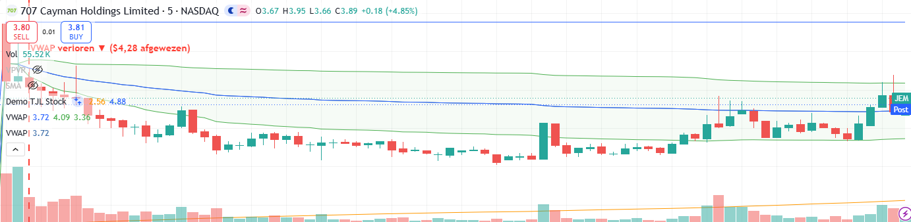

Dit dashboard signaleert kansen die het automatisch scant — geen koopadviezen. Het is gebouwd rond de strategieën van HumbledTrader (uit haar eigen video's):
📈 Haar strategieën in het kort
Hoe de kaarten daarop aansluiten:
Wat traders hier doorgaans mee doen (educatief):
| Sym | Gap | RVol | Grootte | Reden/nieuws |
|---|---|---|---|---|
| JEM | +136.78% | 132.05x | - | BC-Most Active Stocks |
| ↳ Grote sprong omhoog, ongewoon druk (132.05× normaal) — sterke, meestal nieuwsgedreven beweging. | ||||
| TC | +47.57% | 4255.03x | $0.01B small | Asian Equities Traded in the US as American Depositary Recei |
| ↳ Grote sprong omhoog, ongewoon druk (4255.03× normaal) — sterke, meestal nieuwsgedreven beweging. | ||||
| GVH | +27.92% | 15.15x | $0.01B small | Is Now The Time To Look At Buying Globavend Holdings Limited |
| ↳ Grote sprong omhoog, ongewoon druk (15.15× normaal) — sterke, meestal nieuwsgedreven beweging. | ||||
| EHGO | +23.08% | 100.13x | - small | — |
| ↳ Grote sprong omhoog, ongewoon druk (100.13× normaal) — sterke, meestal nieuwsgedreven beweging. | ||||
| TONX | +5.88% | 3.07x | $0.17B small | Nasdaq TON Whale Locks 226 Million Tokens as Yield Jumps |
| ↳ Flinke sprong omhoog, ongewoon druk (3.07× normaal) — sterke, meestal nieuwsgedreven beweging. | ||||
| LABT | +4.78% | 3.03x | $0.01B small | — |
| ↳ Flinke sprong omhoog, ongewoon druk (3.03× normaal) — sterke, meestal nieuwsgedreven beweging. | ||||
| CCXI | +4.3% | 18.31x | $1.08B small | Churchill Capital Stock Surges On $2.5B Merger With Agility |
| ↳ Flinke sprong omhoog, ongewoon druk (18.31× normaal) — sterke, meestal nieuwsgedreven beweging. | ||||

| Pair | Freq | Win | Edge |
|---|---|---|---|
| LINK-USD | 0.74/mo | 55.6% | +5.86% |
| BNB-USD | 1.32/mo | 56.2% | +1.93% |
| XRP-USD | 0.33/mo | 50.0% | +7.8% |
| AAVE-USD | 0.33/mo | 75.0% | +4.69% |
| INJ-USD | 0.74/mo | 55.6% | +2.69% |
| AVAX-USD | 0.74/mo | 55.6% | +2.58% |
| NEAR-USD | 0.74/mo | 66.7% | +2.15% |
| DOGE-USD | 0.49/mo | 50.0% | +3.57% |